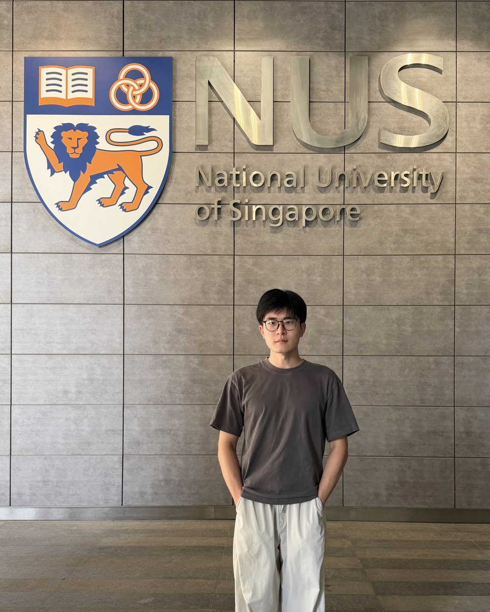

Zhaozheng Shen沈召正
I am a PhD student at the National University of Singapore working on construction robotics and automation. My research studies how robots can perceive, plan and act in construction settings — robotic interior finishing in prefabricated modules, autonomous visual data collection, learning-based control of crane lifting, and visual understanding for robotic disassembly.
我是新加坡国立大学的博士研究生，研究方向为施工机器人与建造自动化，关注机器人如何在施工场景中感知、规划与执行：预制模块内的机器人室内装修、自主视觉数据采集、塔吊吊装的学习型控制，以及面向机器人拆解的视觉理解。
Before my PhD, my master’s research at Tongji University studied intelligent construction scheduling for steel-frame structures, linking BIM-derived constraints with installation sequencing and multi-objective optimisation.
博士之前，我在同济大学的硕士研究方向为钢框架结构智能施工调度，将 BIM 构件约束与安装排序、多目标优化相结合。

Research directions研究方向
Selected publications代表论文
Reinforcement Learning–Driven Intelligent Path Planning for Dual Tower Cranes in Modular Construction Sites
Multiobjective Ant Colony System Algorithm for Component-Level Construction Schedule Optimization
A dual-adaptive directed genetic algorithm for construction scheduling
基于智能算法的钢框架结构施工调度方法研究
Get in touch联系方式
Happy to discuss construction robotics, automation and learning-based control for construction.
欢迎交流施工机器人、建造自动化与学习型控制相关研究。
zhaozhengcee@u.nus.edu